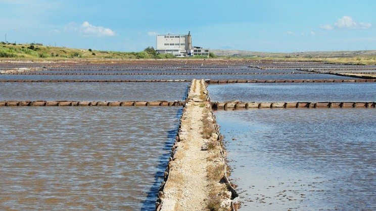
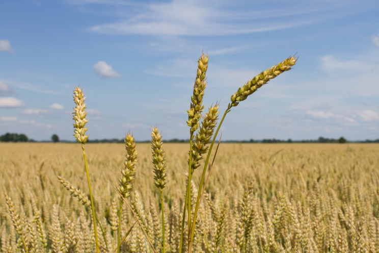
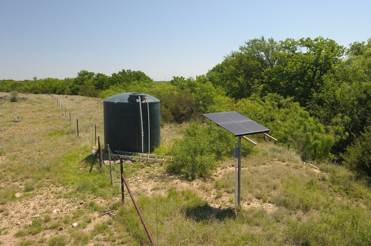
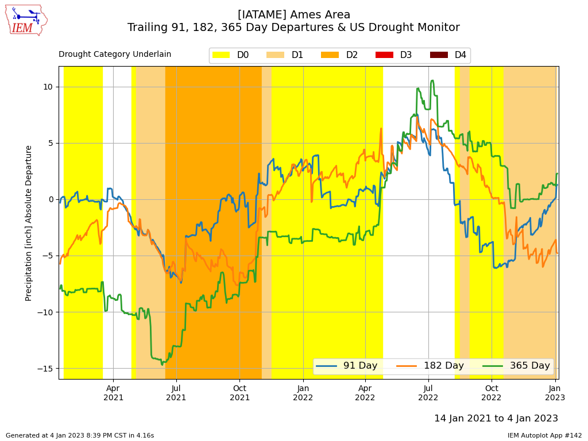

WHAT IS DROUGHT?
Drought is a type of natural disaster that happens when an area does not get enough rain for a long time. This lack of water can lead to various problems. Crops can’t grow properly without water, so farmers can lose a lot of money if there is a drought. This can also lead to a shortage of food because crops are the main source of food for both people and animals. Not just crops, but all plants can suffer in a drought. This can be bad for animals too, as many animals depend on plants for food and shelter. Drought can also cause water supplies to run low. This can make it hard for people to find enough water for drinking, cooking, and washing. In severe droughts, the ground can become so dry that it cracks. This can damage buildings and other structures. Moreover, drought can lead to fires. When the vegetation is dry, it can easily catch fire. Sometimes, these fires can spread quickly and cause a lot of damage. Drought is a serious problem that affects many parts of the world. Scientists are working on ways to predict and handle droughts to reduce their impact. They also suggest that everyone should try to save water to help prevent droughts. This is because every drop of water we save can make a big difference in times of drought.

CAUSES OF DRAUGHT
1. Deforestation:
The main cause of “drought” is deforestation, which leads to a shortage of rainfall. Trees and shrubs
hold the ground water, prevent it from evaporation and attracts rainfall. Deforestation is carried out
to clear the land for farming, industrialization and urbanization. The soil in these areas loses its
capacity to hold water, which also leads to “drought” condition. The devastating flood in the beautiful
state of Kerala has become one of the biggest catastrophe in recent times.
2. Diminishing Water Bodies:
The usage of water bodies like rivers and lakes is done on a huge scale. During scorching summers these
rivers and lakes are dried which result in dreadful “droughts”. Due to extreme climatic condition and
various human activities, the water in these water bodies dries down which leads to “drought”. Wells are
also a main sources of water in various regions in the country. Villages and towns in the states of
Maharashtra and Gujarat are facing life threatening situation where water in the wells has dried up.
People in these villages stand in long queues to purchase water for drinking and daily needs.
EFEECTS OF DROUGHTS
Effects of Drought:
The farming sector in India is the most vulnerable to the climatic condition. Most of the agriculture in
India is dependent on rainfall and ground water. “Drought” like situation has tremendously affected the
farming sector and animal husbandry in India. The scorching sun sucks the ground water and becomes fatal
to the cattle.
Measures to Prevent Drought:
Droughts can be prevented by –
i. Planting more trees.
ii. Implementing water conservation techniques.
iii. Reducing wastage of water and water pollution.
Conclusion:
Although initiatives like the “Paani Foundation” are being taken to mitigate “drought” condition in
India but not much is done till date. As a responsible citizen we must contribute to the efforts taken
to combat “drought” condition so that our future generations will not face such crisis.
HOW TO CONTROLL DRAUGHT
Desalination of water:
Even though more than 70% of the earth’s surface is covered with water, only 0.003% of it is fresh
water. In many places of the world, annual rainfall is the only way to replenish the freshwater sources.
But what if we could desalinate water? Then we have oceans to help us get fresh water.
But it is easier said than done. Desalination of water is pretty resource intensive. First, the water
needs to be boiled, converted to steam and then condensed.
This requires a significant amount of fossil fuels to produce heat. But hope is still at hand as the
developments in the field has made filters made up of graphene that can desalinate water with nothing
more than hydrostatic pressure.

Rain water Harvesting:
Rainwater harvesting has seen major growth in recent years and this is something everyone should adopt.
With rainwater harvesting, homes can store the water they get from rain and then use it when they need
it in dry conditions.
In urban areas, only 15% of rainwater enters the ground while in rural areas 50% of rainwater is
absorbed into the ground. Rainwater harvesting provides both urban and rural areas with an efficient
option to store rainwater and then reuse it in times of drought.
If a house has a primary water source, then rainwater harvesting provides them with an auxiliary option
that they can use when water is not available. Rainwater harvesting is a great way to combat drought and
is now encouraged among farmers and herders to provide their agriculture with water in times of drought.

Drip Irrigation:
hopes to achieve optimum water delivery for plants and optimum moisture in the soil. The advantage of
such a system is that it does not result in water wastage.
Nowadays, many companies have come forward providing the market with cost-effective and intuitive drip
irrigation systems.
Technologically advanced farms are moving towards IoT inspired drip irrigation systems that can operate
without human intervention. The highly targeted nature of drip irrigation ensures that each plant gets
the right amount of water delivered right on its roots.

Harvesting water from the air:
Air as we know it contains many elements, and one among it is moisture. If we could build something
efficient to harvest that moisture and condense it, we could harvest water from the air.
And this is what researchers from MIT have done!
This solar powered device uses a large surface area of the pores in Metal-Organic Frameworks (MOFs) to
catch water vapor and pass it between two temperatures zones to condense it. A field test conducted in
Arizona was a success and now the team hopes to scale up the system so that it can produce many liters
of water within a short period of time.
The two major advantages of this system are that it can harvest water without the use of electricity and
the ability to produce water in desert climates.

Crop engineering:
We can build new mechanisms outside of the plants to keep them watered and safe from drought, but we
could also genetically engineer them to be resilient to conditions where the water content in the soil
is very low.
Food production is a crucial part of keeping the population alive. However, droughts can affect the
productivity and tip the balance of food available to the masses.
Crop engineering hopes to tweak the genetics of existing crops to help them increase their yield and
provide them with better resistance to drought.
A research project from Realizing Increased Photosynthetic Efficiency (RIPE) has successfully improved
corps in the way they use water, up to 25% more efficiently.
Researches have been done by various organizations around the world in efforts to engineer crops that
can withstand the harshness of droughts.

Solar pumps :
The most common method that we use to water crops or provide water to livestock is by pumping it out of
the earth. However, pumps do consume electricity, which in turn, consumes more fossil fuels.
Solar pumps are gaining popularity because they do not use up electricity from the mains to pump water
for irrigation. The governments around the world are realizing the potential of solar pumps and some
have even started granting subsidies for farmers to install them cost-effectively.

Recycling organic waste:
The most common method that we use to water crops or provide water to livestock is by pumping it out of
the earth. However, pumps do consume electricity, which in turn, consumes more fossil fuels.
Solar pumps are gaining popularity because they do not use up electricity from the mains to pump water
for irrigation. The governments around the world are realizing the potential of solar pumps and some
have even started granting subsidies for farmers to install them cost-effectively.
Planting more trees :
This is might sound like old-age advice, but planting tree is the best way to reduce damage from
drought, improve the quality of the environment and increase the success of precipitation.
Many countries have started their efforts by turning arid lands into forested by planting trees and
saplings.

SEE THE GRPHS OF DRAUGHT
SEE THE MAP OF DRAUGHT